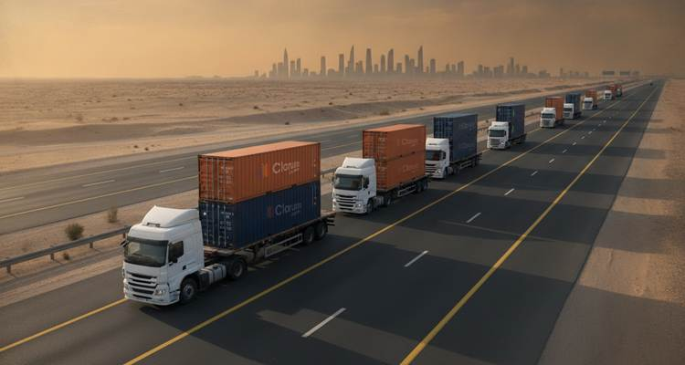
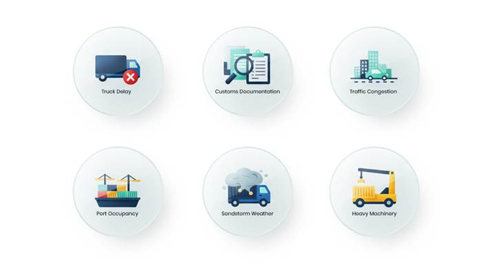

Delivery Plan at Dammam:
Introduction: 
Clarusto Logistics is an active supplier in GCC and Middle East. Behu
Ltd, one of our trusted clients reverted back with gratefulness and working on
the next logistics project for a delivery certainly to happen from Dammam to
Riyadh, yet also considering Jeddah to Riyadh, whichever falls convenient for
both with a consent. This case covers the delivery plan for 4 containers of
40FL and 3 containers of 40HC. Addition to this, client has a distinguished
request of delivering it in a single day. However, Clarusto Logistics has
rigorously worked upon its previous consignments of same kind and so expects to
repeat the same to our existing client for this time as well.
Objective:
To provide surety of safe, cost-efficient, and time bound delivery considering
the deadlines for an effective logistics.
· Covering an estimated route of 400 kms, approx. the conducted survey depicts a coverage of single day deliverance projecting sustainability.
· The overall mapping of transit evaluation is assessed by trucking, railways and multimodal, resulting in opting for road transport as it’s much of a flexible way and an ease for onsite delivery.
· Port handling at both stoppages should be well coordinated inclined with filed and organized documentation.
· Custom clearance and container discharge following the regulations to avoid any delay.
· Enabled footprints to approach live at all movements.
· Portraying safety rules and check and also complying to the norms of all ports.
· Availability of correct machinery vehicles to load and offload.
Challenges:
Occupancy at both the ports and the with the duly completion of inspection,
there exists a reasonable delay to the release of the consignment for reaching
the next destination.
· Inadequate and unorganized documented consignment leads to a definite delay causing an inefficiency for acquiring end customer satisfaction.
· Operational delays including peak hour traffic congestion can create problems for all stages and unassessed maneuvering is considered breach of regulations.
· Strict law pertaining GCC has variable law structure including Riyadh dry port affecting timelines.
· Located adjacent to maritime and rail terminal, the occupancy is relatively higher to get a quick exit meeting and satisfying all regulations.
·
Possibility of shortage of machinery vehicles and trailers with
its booking longevity. 
Process Execution:
With all the incurred and possibility evaluated within the
challenges, Clarusto Logistics expertise along with it’s professionals derived
a planned way out of all the obstacles to make a hassle-free delivery.
· Considering the volume scenario transit plan; precisely no segregation but a combination of both (40HC & 40FCL).
· Fleet plan of trucking includes 20 trailers or even a shuttle model whichever is an easy mode concerning the traffic blockages and route checks.
· Avoiding peak congestion and seasonal/holiday surges.
· Strict monitoring once entering GCC for extreme weather scenarios and sand storms; blocking highway unexpectedly.
· Strictly following the costing components for an unlikely situation-
Ø Port handling charges.
Ø Trucking and transit cost.
Ø Fuel surcharge.
Ø Custom clearance.
Ø Avoiding delays which results in detention/demurrage.
Conclusion:
Clarusto Logistics imposed discussion and planned strategized process
structure have given a result-oriented consignment, providing clear learnings
from unfavorable situations which was to least. Optimum resources availability.
Execution of hybrid model of transportation gives a clear vision for continuous
and quick transition from Riyadh. Routing survey plays a vital role for
successful commuting and non-obstruction break freight. Assigning custom
clearance specialist has provided an option for quick discharge of the
consignment including well organized and coordinated end delivery.